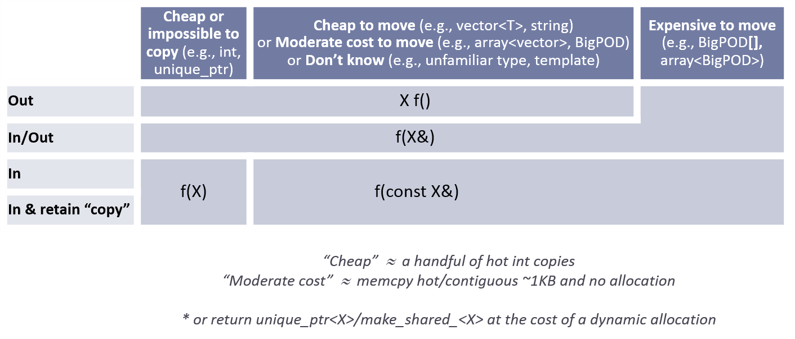

F: Functions {#S-functions}¶
A function specifies an action or a computation that takes the system from one consistent state to the next. It is the fundamental building block of programs.
It should be possible to name a function meaningfully, to specify the requirements of its argument, and clearly state the relationship between the arguments and the result. An implementation is not a specification. Try to think about what a function does as well as about how it does it. Functions are the most critical part in most interfaces, so see the interface rules.
Function rule summary:
Function definition rules:
- F.1: "Package" meaningful operations as carefully named functions
- F.2: A function should perform a single logical operation
- F.3: Keep functions short and simple
- F.4: If a function might have to be evaluated at compile time, declare it
constexpr - F.5: If a function is very small and time-critical, declare it inline
- F.6: If your function must not throw, declare it
noexcept - F.7: For general use, take
T*orT&arguments rather than smart pointers - F.8: Prefer pure functions
- F.9: Unused parameters should be unnamed
- F.10: If an operation can be reused, give it a name
- F.11: Use an unnamed lambda if you need a simple function object in one place only
Parameter passing expression rules:
- F.15: Prefer simple and conventional ways of passing information
- F.16: For "in" parameters, pass cheaply-copied types by value and others by reference to
const - F.17: For "in-out" parameters, pass by reference to non-
const - F.18: For "will-move-from" parameters, pass by
X&&andstd::movethe parameter - F.19: For "forward" parameters, pass by
TP&&and onlystd::forwardthe parameter - F.20: For "out" output values, prefer return values to output parameters
- F.21: To return multiple "out" values, prefer returning a struct
- F.60: Prefer
T*overT&when "no argument" is a valid option
Parameter passing semantic rules:
- F.22: Use
T*orowner<T*>to designate a single object - F.23: Use a
not_null<T>to indicate that "null" is not a valid value - F.24: Use a
span<T>or aspan_p<T>to designate a half-open sequence - F.25: Use a
zstringor anot_null<zstring>to designate a C-style string - F.26: Use a
unique_ptr<T>to transfer ownership where a pointer is needed - F.27: Use a
shared_ptr<T>to share ownership
- F.42: Return a
T*to indicate a position (only) - F.43: Never (directly or indirectly) return a pointer or a reference to a local object
- F.44: Return a
T&when copy is undesirable and "returning no object" isn't needed - F.45: Don't return a
T&& - F.46:
intis the return type formain() - F.47: Return
T&from assignment operators - F.48: Don't return
std::move(local) - F.49: Don't return
const T
Other function rules:
- F.50: Use a lambda when a function won't do (to capture local variables, or to write a local function)
- F.51: Where there is a choice, prefer default arguments over overloading
- F.52: Prefer capturing by reference in lambdas that will be used locally, including passed to algorithms
- F.53: Avoid capturing by reference in lambdas that will be used non-locally, including returned, stored on the heap, or passed to another thread
- F.54: When writing a lambda that captures
thisor any class data member, don't use[=]default capture - F.55: Don't use
va_argarguments - F.56: Avoid unnecessary condition nesting
Functions have strong similarities to lambdas and function objects.
See also: C.lambdas: Function objects and lambdas
F.def: Function definitions¶
A function definition is a function declaration that also specifies the function's implementation, the function body.
F.1: "Package" meaningful operations as carefully named functions¶
Reason¶
Factoring out common code makes code more readable, more likely to be reused, and limit errors from complex code. If something is a well-specified action, separate it out from its surrounding code and give it a name.
Example, don't¶
void read_and_print(istream& is) // read and print an int
{
int x;
if (is >> x)
cout << "the int is " << x << '\n';
else
cerr << "no int on input\n";
}
Almost everything is wrong with read_and_print.
It reads, it writes (to a fixed ostream), it writes error messages (to a fixed ostream), it handles only ints.
There is nothing to reuse, logically separate operations are intermingled and local variables are in scope after the end of their logical use.
For a tiny example, this looks OK, but if the input operation, the output operation, and the error handling had been more complicated the tangled
mess could become hard to understand.
Note¶
If you write a non-trivial lambda that potentially can be used in more than one place, give it a name by assigning it to a (usually non-local) variable.
Example¶
sort(a, b, [](T x, T y) { return x.rank() < y.rank() && x.value() < y.value(); });
Naming that lambda breaks up the expression into its logical parts and provides a strong hint to the meaning of the lambda.
auto lessT = [](T x, T y) { return x.rank() < y.rank() && x.value() < y.value(); };
sort(a, b, lessT);
The shortest code is not always the best for performance or maintainability.
Exception¶
Loop bodies, including lambdas used as loop bodies, rarely need to be named. However, large loop bodies (e.g., dozens of lines or dozens of pages) can be a problem. The rule Keep functions short and simple implies "Keep loop bodies short." Similarly, lambdas used as callback arguments are sometimes non-trivial, yet unlikely to be reusable.
Enforcement¶
- See Keep functions short and simple
- Flag identical and very similar lambdas used in different places.
F.2: A function should perform a single logical operation¶
Reason¶
A function that performs a single operation is simpler to understand, test, and reuse.
Example¶
Consider:
void read_and_print() // bad
{
int x;
cin >> x;
// check for errors
cout << x << "\n";
}
This is a monolith that is tied to a specific input and will never find another (different) use. Instead, break functions up into suitable logical parts and parameterize:
int read(istream& is) // better
{
int x;
is >> x;
// check for errors
return x;
}
void print(ostream& os, int x)
{
os << x << "\n";
}
These can now be combined where needed:
void read_and_print()
{
auto x = read(cin);
print(cout, x);
}
If there was a need, we could further templatize read() and print() on the data type, the I/O mechanism, the response to errors, etc. Example:
auto read = [](auto& input, auto& value) // better
{
input >> value;
// check for errors
};
void print(auto& output, const auto& value)
{
output << value << "\n";
}
Enforcement¶
- Consider functions with more than one "out" parameter suspicious. Use return values instead, including
tuplefor multiple return values. - Consider "large" functions that don't fit on one editor screen suspicious. Consider factoring such a function into smaller well-named suboperations.
- Consider functions with 7 or more parameters suspicious.
F.3: Keep functions short and simple¶
Reason¶
Large functions are hard to read, more likely to contain complex code, and more likely to have variables in larger than minimal scopes. Functions with complex control structures are more likely to be long and more likely to hide logical errors
Example¶
Consider:
double simple_func(double val, int flag1, int flag2)
// simple_func: takes a value and calculates the expected ASIC output,
// given the two mode flags.
{
double intermediate;
if (flag1 > 0) {
intermediate = func1(val);
if (flag2 % 2)
intermediate = sqrt(intermediate);
}
else if (flag1 == -1) {
intermediate = func1(-val);
if (flag2 % 2)
intermediate = sqrt(-intermediate);
flag1 = -flag1;
}
if (abs(flag2) > 10) {
intermediate = func2(intermediate);
}
switch (flag2 / 10) {
case 1: if (flag1 == -1) return finalize(intermediate, 1.171);
break;
case 2: return finalize(intermediate, 13.1);
default: break;
}
return finalize(intermediate, 0.);
}
This is too complex. How would you know if all possible alternatives have been correctly handled? Yes, it breaks other rules also.
We can refactor:
double func1_muon(double val, int flag)
{
// ???
}
double func1_tau(double val, int flag1, int flag2)
{
// ???
}
double simple_func(double val, int flag1, int flag2)
// simple_func: takes a value and calculates the expected ASIC output,
// given the two mode flags.
{
if (flag1 > 0)
return func1_muon(val, flag2);
if (flag1 == -1)
// handled by func1_tau: flag1 = -flag1;
return func1_tau(-val, flag1, flag2);
return 0.;
}
Note¶
"It doesn't fit on a screen" is often a good practical definition of "far too large." One-to-five-line functions should be considered normal.
Note¶
Break large functions up into smaller cohesive and named functions. Small simple functions are easily inlined where the cost of a function call is significant.
Enforcement¶
- Flag functions that do not "fit on a screen." How big is a screen? Try 60 lines by 140 characters; that's roughly the maximum that's comfortable for a book page.
- Flag functions that are too complex. How complex is too complex? You could use cyclomatic complexity. Try "more than 10 logical paths through." Count a simple switch as one path.
F.4: If a function might have to be evaluated at compile time, declare it constexpr¶
Reason¶
constexpr is needed to tell the compiler to allow compile-time evaluation.
Example¶
The (in)famous factorial:
constexpr int fac(int n)
{
constexpr int max_exp = 17; // constexpr enables max_exp to be used in Expects
Expects(0 <= n && n < max_exp); // prevent silliness and overflow
int x = 1;
for (int i = 2; i <= n; ++i) x *= i;
return x;
}
This is C++14.
For C++11, use a recursive formulation of fac().
Note¶
constexpr does not guarantee compile-time evaluation;
it just guarantees that the function can be evaluated at compile time for constant expression arguments if the programmer requires it or the compiler decides to do so to optimize.
constexpr int min(int x, int y) { return x < y ? x : y; }
void test(int v)
{
int m1 = min(-1, 2); // probably compile-time evaluation
constexpr int m2 = min(-1, 2); // compile-time evaluation
int m3 = min(-1, v); // run-time evaluation
constexpr int m4 = min(-1, v); // error: cannot evaluate at compile time
}
Note¶
Don't try to make all functions constexpr.
Most computation is best done at run time.
Note¶
Any API that might eventually depend on high-level run-time configuration or
business logic should not be made constexpr. Such customization can not be
evaluated by the compiler, and any constexpr functions that depended upon
that API would have to be refactored or drop constexpr.
Enforcement¶
Impossible and unnecessary.
The compiler gives an error if a non-constexpr function is called where a constant is required.
F.5: If a function is very small and time-critical, declare it inline¶
Reason¶
Some optimizers are good at inlining without hints from the programmer, but don't rely on it. Measure! Over the last 40 years or so, we have been promised compilers that can inline better than humans without hints from humans. We are still waiting. Specifying inline (explicitly, or implicitly when writing member functions inside a class definition) encourages the compiler to do a better job.
Example¶
inline string cat(const string& s, const string& s2) { return s + s2; }
Exception¶
Do not put an inline function in what is meant to be a stable interface unless you are certain that it will not change.
An inline function is part of the ABI.
Note¶
constexpr implies inline.
Note¶
Member functions defined in-class are inline by default.
Exception¶
Function templates (including member functions of class templates A<T>::function() and member function templates A::function<T>()) are normally defined in headers and therefore inline.
Note¶
Consider making functions out of line if they are more than three statements and can be declared out of line (such as class member functions).
F.6: If your function must not throw, declare it noexcept¶
Reason¶
If an exception is not supposed to be thrown, the program cannot be assumed to cope with the error and should be terminated as soon as possible. Declaring a function noexcept helps optimizers by reducing the number of alternative execution paths. It also speeds up the exit after failure.
Example¶
Put noexcept on every function written completely in C or in any other language without exceptions.
The C++ Standard Library does that implicitly for all functions in the C Standard Library.
Note¶
constexpr functions can throw when evaluated at run time, so you might need conditional noexcept for some of those.
Example¶
You can use noexcept even on functions that can throw:
vector<string> collect(istream& is) noexcept
{
vector<string> res;
for (string s; is >> s;)
res.push_back(s);
return res;
}
If collect() runs out of memory, the program crashes.
Unless the program is crafted to survive memory exhaustion, that might be just the right thing to do;
terminate() might generate suitable error log information (but after memory runs out it is hard to do anything clever).
Note¶
You must be aware of the execution environment that your code is running when
deciding whether to tag a function noexcept, especially because of the issue
of throwing and allocation. Code that is intended to be perfectly general (like
the standard library and other utility code of that sort) needs to support
environments where a bad_alloc exception could be handled meaningfully.
However, most programs and execution environments cannot meaningfully
handle a failure to allocate, and aborting the program is the cleanest and
simplest response to an allocation failure in those cases. If you know that
your application code cannot respond to an allocation failure, it could be
appropriate to add noexcept even on functions that allocate.
Put another way: In most programs, most functions can throw (e.g., because they
use new, call functions that do, or use library functions that reports failure
by throwing), so don't just sprinkle noexcept all over the place without
considering whether the possible exceptions can be handled.
noexcept is most useful (and most clearly correct) for frequently used,
low-level functions.
Note¶
Destructors, swap functions, move operations, and default constructors should never throw.
See also C.44.
Enforcement¶
- Flag functions that are not
noexcept, yet cannot throw. - Flag throwing
swap,move, destructors, and default constructors.
F.7: For general use, take T* or T& arguments rather than smart pointers¶
Reason¶
Passing a smart pointer transfers or shares ownership and should only be used when ownership semantics are intended. A function that does not manipulate lifetime should take raw pointers or references instead.
Passing by smart pointer restricts the use of a function to callers that use smart pointers.
A function that needs a widget should be able to accept any widget object, not just ones whose lifetimes are managed by a particular kind of smart pointer.
Passing a shared smart pointer (e.g., std::shared_ptr) implies a run-time cost.
Example¶
// accepts any int*
void f(int*);
// can only accept ints for which you want to transfer ownership
void g(unique_ptr<int>);
// can only accept ints for which you are willing to share ownership
void g(shared_ptr<int>);
// doesn't change ownership, but requires a particular ownership of the caller
void h(const unique_ptr<int>&);
// accepts any int
void h(int&);
Example, bad¶
// callee
void f(shared_ptr<widget>& w)
{
// ...
use(*w); // only use of w -- the lifetime is not used at all
// ...
};
// caller
shared_ptr<widget> my_widget = /* ... */;
f(my_widget);
widget stack_widget;
f(stack_widget); // error
Example, good¶
// callee
void f(widget& w)
{
// ...
use(w);
// ...
};
// caller
shared_ptr<widget> my_widget = /* ... */;
f(*my_widget);
widget stack_widget;
f(stack_widget); // ok -- now this works
Note¶
We can catch many common cases of dangling pointers statically (see lifetime safety profile). Function arguments naturally live for the lifetime of the function call, and so have fewer lifetime problems.
Enforcement¶
- (Simple) Warn if a function takes a parameter of a smart pointer type (that overloads
operator->oroperator*) that is copyable but the function only calls any of:operator*,operator->orget(). Suggest using aT*orT&instead. - Flag a parameter of a smart pointer type (a type that overloads
operator->oroperator*) that is copyable/movable but never copied/moved from in the function body, and that is never modified, and that is not passed along to another function that could do so. That means the ownership semantics are not used. Suggest using aT*orT&instead.
See also:
F.8: Prefer pure functions¶
Reason¶
Pure functions are easier to reason about, sometimes easier to optimize (and even parallelize), and sometimes can be memoized.
Example¶
template<class T>
auto square(T t) { return t * t; }
Enforcement¶
Not possible.
F.9: Unused parameters should be unnamed¶
Reason¶
Readability. Suppression of unused parameter warnings.
Example¶
widget* find(const set<widget>& s, const widget& w, Hint); // once upon a time, a hint was used
Note¶
Allowing parameters to be unnamed was introduced in the early 1980s to address this problem.
If parameters are conditionally unused, declare them with the [[maybe_unused]] attribute.
For example:
template <typename Value>
Value* find(const set<Value>& s, const Value& v, [[maybe_unused]] Hint h)
{
if constexpr (sizeof(Value) > CacheSize)
{
// a hint is used only if Value is of a certain size
}
}
Enforcement¶
Flag named unused parameters.
F.10: If an operation can be reused, give it a name¶
Reason¶
Documentation, readability, opportunity for reuse.
Example¶
struct Rec {
string name;
string addr;
int id; // unique identifier
};
bool same(const Rec& a, const Rec& b)
{
return a.id == b.id;
}
vector<Rec*> find_id(const string& name); // find all records for "name"
auto x = find_if(vr.begin(), vr.end(),
[&](Rec& r) {
if (r.name.size() != n.size()) return false; // name to compare to is in n
for (int i = 0; i < r.name.size(); ++i)
if (tolower(r.name[i]) != tolower(n[i])) return false;
return true;
}
);
There is a useful function lurking here (case insensitive string comparison), as there often is when lambda arguments get large.
bool compare_insensitive(const string& a, const string& b)
{
if (a.size() != b.size()) return false;
for (int i = 0; i < a.size(); ++i) if (tolower(a[i]) != tolower(b[i])) return false;
return true;
}
auto x = find_if(vr.begin(), vr.end(),
[&](Rec& r) { return compare_insensitive(r.name, n); }
);
Or maybe (if you prefer to avoid the implicit name binding to n):
auto cmp_to_n = [&n](const string& a) { return compare_insensitive(a, n); };
auto x = find_if(vr.begin(), vr.end(),
[](const Rec& r) { return cmp_to_n(r.name); }
);
Note¶
whether functions, lambdas, or operators.
Exception¶
- Lambdas logically used only locally, such as an argument to
for_eachand similar control flow algorithms. - Lambdas as initializers
Enforcement¶
- (hard) flag similar lambdas
- ???
F.11: Use an unnamed lambda if you need a simple function object in one place only¶
Reason¶
That makes the code concise and gives better locality than alternatives.
Example¶
auto earlyUsersEnd = std::remove_if(users.begin(), users.end(),
[](const User &a) { return a.id > 100; });
Exception¶
Naming a lambda can be useful for clarity even if it is used only once.
Enforcement¶
- Look for identical and near identical lambdas (to be replaced with named functions or named lambdas).
F.call: Parameter passing¶
There are a variety of ways to pass parameters to a function and to return values.
F.15: Prefer simple and conventional ways of passing information¶
Reason¶
Using "unusual and clever" techniques causes surprises, slows understanding by other programmers, and encourages bugs. If you really feel the need for an optimization beyond the common techniques, measure to ensure that it really is an improvement, and document/comment because the improvement might not be portable.
The following tables summarize the advice in the following Guidelines, F.16-21.
Normal parameter passing:

Advanced parameter passing:

Use the advanced techniques only after demonstrating need, and document that need in a comment.
For passing sequences of characters see String.
Exception¶
To express shared ownership using shared_ptr types, rather than following guidelines F.16-21,
follow R.34, R.35, and R.36.
F.16: For "in" parameters, pass cheaply-copied types by value and others by reference to const¶
Reason¶
Both let the caller know that a function will not modify the argument, and both allow initialization by rvalues.
What is "cheap to copy" depends on the machine architecture, but two or three words (doubles, pointers, references) are usually best passed by value. When copying is cheap, nothing beats the simplicity and safety of copying, and for small objects (up to two or three words) it is also faster than passing by reference because it does not require an extra indirection to access from the function.
Example¶
void f1(const string& s); // OK: pass by reference to const; always cheap
void f2(string s); // bad: potentially expensive
void f3(int x); // OK: Unbeatable
void f4(const int& x); // bad: overhead on access in f4()
For advanced uses (only), where you really need to optimize for rvalues passed to "input-only" parameters:
- If the function is going to unconditionally move from the argument, take it by
&&. See F.18. - If the function is going to keep a locally modifiable copy of the argument only for its own local use, taking it by value is fine
- If the function is going to keep a copy of the argument to pass to another destination (to another function, or store in a non-local location), in addition to passing by
const&(for lvalues), add an overload that passes the parameter by&&(for rvalues) and in the bodystd::moves it to its destination. Essentially this overloads a "will-move-from"; see F.18. - In special cases, such as multiple "input + copy" parameters, consider using perfect forwarding. See F.19.
Example¶
int multiply(int, int); // just input ints, pass by value
// suffix is input-only but not as cheap as an int, pass by const&
string& concatenate(string&, const string& suffix);
void sink(unique_ptr<widget>); // input only, and moves ownership of the widget
Avoid "esoteric techniques" such as passing arguments as T&& "for efficiency".
Most rumors about performance advantages from passing by && are false or brittle (but see F.18 and F.19).
Notes¶
A reference can be assumed to refer to a valid object (language rule).
There is no (legitimate) "null reference."
If you need the notion of an optional value, use a pointer, std::optional, or a special value used to denote "no value."
Enforcement¶
- (Simple) ((Foundation)) Warn when a parameter being passed by value has a size greater than
2 * sizeof(void*). Suggest using a reference toconstinstead. - (Simple) ((Foundation)) Warn when a parameter passed by reference to
consthas a size less or equal than2 * sizeof(void*). Suggest passing by value instead. - (Simple) ((Foundation)) Warn when a parameter passed by reference to
constismoved.
Exception¶
To express shared ownership using shared_ptr types, follow R.34 or R.36,
depending on whether or not the function unconditionally takes a reference to the argument.
F.17: For "in-out" parameters, pass by reference to non-const¶
Reason¶
This makes it clear to callers that the object is assumed to be modified.
Example¶
void update(Record& r); // assume that update writes to r
Note¶
Some user-defined and standard library types, such as span<T> or the iterators
are cheap to copy and may be passed by value, while doing so has
mutable (in-out) reference semantics:
void increment_all(span<int> a)
{
for (auto&& e : a)
++e;
}
Note¶
A T& argument can pass information into a function as well as out of it.
Thus T& could be an in-out-parameter. That can in itself be a problem and a source of errors:
void f(string& s)
{
s = "New York"; // non-obvious error
}
void g()
{
string buffer = ".................................";
f(buffer);
// ...
}
Here, the writer of g() is supplying a buffer for f() to fill, but f() simply replaces it (at a somewhat higher cost than a simple copy of the characters).
A bad logic error can happen if the writer of g() incorrectly assumes the size of the buffer.
Enforcement¶
- (Moderate) ((Foundation)) Warn about functions regarding reference to non-
constparameters that do not write to them. - (Simple) ((Foundation)) Warn when a non-
constparameter being passed by reference ismoved.
F.18: For "will-move-from" parameters, pass by X&& and std::move the parameter¶
Reason¶
It's efficient and eliminates bugs at the call site: X&& binds to rvalues, which requires an explicit std::move at the call site if passing an lvalue.
Example¶
void sink(vector<int>&& v) // sink takes ownership of whatever the argument owned
{
// usually there might be const accesses of v here
store_somewhere(std::move(v));
// usually no more use of v here; it is moved-from
}
Note that the std::move(v) makes it possible for store_somewhere() to leave v in a moved-from state.
That could be dangerous.
Exception¶
Unique owner types that are move-only and cheap-to-move, such as unique_ptr, can also be passed by value which is simpler to write and achieves the same effect. Passing by value does generate one extra (cheap) move operation, but prefer simplicity and clarity first.
For example:
template<class T>
void sink(std::unique_ptr<T> p)
{
// use p ... possibly std::move(p) onward somewhere else
} // p gets destroyed
Exception¶
If the "will-move-from" parameter is a shared_ptr follow R.34 and pass the shared_ptr by value.
Enforcement¶
- Flag all
X&¶meters (whereXis not a template type parameter name) where the function body uses them withoutstd::move. - Flag access to moved-from objects.
- Don't conditionally move from objects
F.19: For "forward" parameters, pass by TP&& and only std::forward the parameter¶
Reason¶
If the object is to be passed onward to other code and not directly used by this function, we want to make this function agnostic to the argument const-ness and rvalue-ness.
In that case, and only that case, make the parameter TP&& where TP is a template type parameter -- it both ignores and preserves const-ness and rvalue-ness. Therefore any code that uses a TP&& is implicitly declaring that it itself doesn't care about the variable's const-ness and rvalue-ness (because it is ignored), but that intends to pass the value onward to other code that does care about const-ness and rvalue-ness (because it is preserved). When used as a parameter TP&& is safe because any temporary objects passed from the caller will live for the duration of the function call. A parameter of type TP&& should essentially always be passed onward via std::forward in the body of the function.
Example¶
Usually you forward the entire parameter (or parameter pack, using ...) exactly once on every static control flow path:
template<class F, class... Args>
inline decltype(auto) invoke(F&& f, Args&&... args)
{
return forward<F>(f)(forward<Args>(args)...);
}
Example¶
Sometimes you may forward a composite parameter piecewise, each subobject once on every static control flow path:
template<class PairLike>
inline auto test(PairLike&& pairlike)
{
// ...
f1(some, args, and, forward<PairLike>(pairlike).first); // forward .first
f2(and, forward<PairLike>(pairlike).second, in, another, call); // forward .second
}
Enforcement¶
- Flag a function that takes a
TP&¶meter (whereTPis a template type parameter name) and does anything with it other thanstd::forwarding it exactly once on every static path, orstd::forwarding it more than once but qualified with a different data member exactly once on every static path.
F.20: For "out" output values, prefer return values to output parameters¶
Reason¶
A return value is self-documenting, whereas a & could be either in-out or out-only and is liable to be misused.
This includes large objects like standard containers that use implicit move operations for performance and to avoid explicit memory management.
If you have multiple values to return, use a tuple or similar multi-member type.
Example¶
// OK: return pointers to elements with the value x
vector<const int*> find_all(const vector<int>&, int x);
// Bad: place pointers to elements with value x in-out
void find_all(const vector<int>&, vector<const int*>& out, int x);
Note¶
A struct of many (individually cheap-to-move) elements might be in aggregate expensive to move.
Exceptions¶
- For non-concrete types, such as types in an inheritance hierarchy, return the object by
unique_ptrorshared_ptr. - If a type is expensive to move (e.g.,
array<BigTrivial>), consider allocating it on the free store and return a handle (e.g.,unique_ptr), or passing it in a reference to non-consttarget object to fill (to be used as an out-parameter). - To reuse an object that carries capacity (e.g.,
std::string,std::vector) across multiple calls to the function in an inner loop: treat it as an in/out parameter and pass by reference.
Example¶
Assuming that Matrix has move operations (possibly by keeping its elements in a std::vector):
Matrix operator+(const Matrix& a, const Matrix& b)
{
Matrix res;
// ... fill res with the sum ...
return res;
}
Matrix x = m1 + m2; // move constructor
y = m3 + m3; // move assignment
Note¶
The return value optimization doesn't handle the assignment case, but the move assignment does.
Example¶
struct Package { // exceptional case: expensive-to-move object
char header[16];
char load[2024 - 16];
};
Package fill(); // Bad: large return value
void fill(Package&); // OK
int val(); // OK
void val(int&); // Bad: Is val reading its argument
Enforcement¶
- Flag reference to non-
constparameters that are not read before being written to and are a type that could be cheaply returned; they should be "out" return values.
F.21: To return multiple "out" values, prefer returning a struct¶
Reason¶
A return value is self-documenting as an "output-only" value.
Note that C++ does have multiple return values, by convention of using tuple-like types (struct, array, tuple, etc.),
possibly with the extra convenience of structured bindings (C++17) at the call site.
Prefer using a named struct if possible.
Otherwise, a tuple is useful in variadic templates.
Example¶
// BAD: output-only parameter documented in a comment
int f(const string& input, /*output only*/ string& output_data)
{
// ...
output_data = something();
return status;
}
// GOOD: self-documenting
struct f_result { int status; string data; };
f_result f(const string& input)
{
// ...
return {status, something()};
}
C++98's standard library used this style in places, by returning pair in some functions.
For example, given a set<string> my_set, consider:
// C++98
pair<set::iterator, bool> result = my_set.insert("Hello");
if (result.second)
do_something_with(result.first); // workaround
With C++17 we are able to use "structured bindings" to give each member a name:
if (auto [ iter, success ] = my_set.insert("Hello"); success)
do_something_with(iter);
A struct with meaningful names is more common in modern C++.
See for example ranges::min_max_result, from_chars_result, and others.
Exception¶
Sometimes, we need to pass an object to a function to manipulate its state.
In such cases, passing the object by reference T& is usually the right technique.
Explicitly passing an in-out parameter back out again as a return value is often not necessary.
For example:
istream& operator>>(istream& in, string& s); // much like std::operator>>()
for (string s; in >> s; ) {
// do something with line
}
Here, both s and in are used as in-out parameters.
We pass in by (non-const) reference to be able to manipulate its state.
We pass s to avoid repeated allocations.
By reusing s (passed by reference), we allocate new memory only when we need to expand s's capacity.
This technique is sometimes called the "caller-allocated out" pattern and is particularly useful for types,
such as string and vector, that needs to do free store allocations.
To compare, if we passed out all values as return values, we would write something like this:
struct get_string_result { istream& in; string s; };
get_string_result get_string(istream& in) // not recommended
{
string s;
in >> s;
return { in, move(s) };
}
for (auto [in, s] = get_string(cin); in; s = get_string(in).s) {
// do something with string
}
We consider that significantly less elegant with significantly less performance.
For a truly strict reading of this rule (F.21), the exception isn't really an exception because it relies on in-out parameters, rather than the plain out parameters mentioned in the rule. However, we prefer to be explicit, rather than subtle.
Note¶
In most cases, it is useful to return a specific, user-defined type. For example:
struct Distance {
int value;
int unit = 1; // 1 means meters
};
Distance d1 = measure(obj1); // access d1.value and d1.unit
auto d2 = measure(obj2); // access d2.value and d2.unit
auto [value, unit] = measure(obj3); // access value and unit; somewhat redundant
// to people who know measure()
auto [x, y] = measure(obj4); // don't; it's likely to be confusing
The overly generic pair and tuple should be used only when the value returned represents independent entities rather than an abstraction.
Another option is to use optional<T> or expected<T, error_code>, rather than pair or tuple.
When used appropriately these types convey more information about what the members mean than pair<T, bool> or pair<T, error_code> do.
Note¶
When the object to be returned is initialized from local variables that are expensive to copy,
explicit move may be helpful to avoid copying:
pair<LargeObject, LargeObject> f(const string& input)
{
LargeObject large1 = g(input);
LargeObject large2 = h(input);
// ...
return { move(large1), move(large2) }; // no copies
}
Alternatively,
pair<LargeObject, LargeObject> f(const string& input)
{
// ...
return { g(input), h(input) }; // no copies, no moves
}
Note this is different from the return move(...) anti-pattern from ES.56
Enforcement¶
- Output parameters should be replaced by return values.
An output parameter is one that the function writes to, invokes a non-
constmember function, or passes on as a non-const. pairortuplereturn types should be replaced bystruct, if possible. In variadic templates,tupleis often unavoidable.
F.60: Prefer T* over T& when "no argument" is a valid option¶
Reason¶
A pointer (T*) can be a nullptr and a reference (T&) cannot, there is no valid "null reference".
Sometimes having nullptr as an alternative to indicated "no object" is useful, but if it is not, a reference is notationally simpler and might yield better code.
Example¶
string zstring_to_string(zstring p) // zstring is a char*; that is a C-style string
{
if (!p) return string{}; // p might be nullptr; remember to check
return string{p};
}
void print(const vector<int>& r)
{
// r refers to a vector<int>; no check needed
}
Note¶
It is possible, but not valid C++ to construct a reference that is essentially a nullptr (e.g., T* p = nullptr; T& r = *p;).
That error is very uncommon.
Note¶
If you prefer the pointer notation (-> and/or * vs. .), not_null<T*> provides the same guarantee as T&.
Enforcement¶
- Flag ???
F.22: Use T* or owner<T*> to designate a single object¶
Reason¶
Readability: it makes the meaning of a plain pointer clear. Enables significant tool support.
Note¶
In traditional C and C++ code, plain T* is used for many weakly-related purposes, such as:
- Identify a (single) object (not to be deleted by this function)
- Point to an object allocated on the free store (and delete it later)
- Hold the
nullptr - Identify a C-style string (zero-terminated array of characters)
- Identify an array with a length specified separately
- Identify a location in an array
This makes it hard to understand what the code does and is supposed to do. It complicates checking and tool support.
Example¶
void use(int* p, int n, char* s, int* q)
{
p[n - 1] = 666; // Bad: we don't know if p points to n elements;
// assume it does not or use span<int>
cout << s; // Bad: we don't know if that s points to a zero-terminated array of char;
// assume it does not or use zstring
delete q; // Bad: we don't know if *q is allocated on the free store;
// assume it does not or use owner
}
better
void use2(span<int> p, zstring s, owner<int*> q)
{
p[p.size() - 1] = 666; // OK, a range error can be caught
cout << s; // OK
delete q; // OK
}
Note¶
owner<T*> represents ownership, zstring represents a C-style string.
Also: Assume that a T* obtained from a smart pointer to T (e.g., unique_ptr<T>) points to a single element.
See also: Support library
See also: Do not pass an array as a single pointer
Enforcement¶
- (Simple) ((Bounds)) Warn for any arithmetic operation on an expression of pointer type that results in a value of pointer type.
F.23: Use a not_null<T> to indicate that "null" is not a valid value¶
Reason¶
Clarity. A function with a not_null<T> parameter makes it clear that the caller of the function is responsible for any nullptr checks that might be necessary.
Similarly, a function with a return value of not_null<T> makes it clear that the caller of the function does not need to check for nullptr.
Example¶
not_null<T*> makes it obvious to a reader (human or machine) that a test for nullptr is not necessary before dereference.
Additionally, when debugging, owner<T*> and not_null<T> can be instrumented to check for correctness.
Consider:
int length(Record* p);
When I call length(p) should I check if p is nullptr first? Should the implementation of length() check if p is nullptr?
// it is the caller's job to make sure p != nullptr
int length(not_null<Record*> p);
// the implementor of length() must assume that p == nullptr is possible
int length(Record* p);
Note¶
A not_null<T*> is assumed not to be the nullptr; a T* might be the nullptr; both can be represented in memory as a T* (so no run-time overhead is implied).
Note¶
not_null is not just for built-in pointers. It works for unique_ptr, shared_ptr, and other pointer-like types.
Enforcement¶
- (Simple) Warn if a raw pointer is dereferenced without being tested against
nullptr(or equivalent) within a function, suggest it is declarednot_nullinstead. - (Simple) Error if a raw pointer is sometimes dereferenced after first being tested against
nullptr(or equivalent) within the function and sometimes is not. - (Simple) Warn if a
not_nullpointer is tested againstnullptrwithin a function.
F.24: Use a span<T> or a span_p<T> to designate a half-open sequence¶
Reason¶
Informal/non-explicit ranges are a source of errors.
Example¶
X* find(span<X> r, const X& v); // find v in r
vector<X> vec;
// ...
auto p = find({vec.begin(), vec.end()}, X{}); // find X{} in vec
Note¶
Ranges are extremely common in C++ code. Typically, they are implicit and their correct use is very hard to ensure.
In particular, given a pair of arguments (p, n) designating an array [p:p+n),
it is in general impossible to know if there really are n elements to access following *p.
span<T> and span_p<T> are simple helper classes designating a [p:q) range and a range starting with p and ending with the first element for which a predicate is true, respectively.
Example¶
A span represents a range of elements, but how do we manipulate elements of that range?
void f(span<int> s)
{
// range traversal (guaranteed correct)
for (int x : s) cout << x << '\n';
// C-style traversal (potentially checked)
for (gsl::index i = 0; i < s.size(); ++i) cout << s[i] << '\n';
// random access (potentially checked)
s[7] = 9;
// extract pointers (potentially checked)
std::sort(&s[0], &s[s.size() / 2]);
}
Note¶
A span<T> object does not own its elements and is so small that it can be passed by value.
Passing a span object as an argument is exactly as efficient as passing a pair of pointer arguments or passing a pointer and an integer count.
See also: Support library
Enforcement¶
(Complex) Warn where accesses to pointer parameters are bounded by other parameters that are integral types and suggest they could use span instead.
F.25: Use a zstring or a not_null<zstring> to designate a C-style string¶
Reason¶
C-style strings are ubiquitous. They are defined by convention: zero-terminated arrays of characters. We must distinguish C-style strings from a pointer to a single character or an old-fashioned pointer to an array of characters.
If you don't need null termination, use string_view.
Example¶
Consider:
int length(const char* p);
When I call length(s) should I check if s is nullptr first? Should the implementation of length() check if p is nullptr?
// the implementor of length() must assume that p == nullptr is possible
int length(zstring p);
// it is the caller's job to make sure p != nullptr
int length(not_null<zstring> p);
Note¶
zstring does not represent ownership.
See also: Support library
F.26: Use a unique_ptr<T> to transfer ownership where a pointer is needed¶
Reason¶
Using unique_ptr is the cheapest way to pass a pointer safely.
See also: C.50 regarding when to return a shared_ptr from a factory.
Example¶
unique_ptr<Shape> get_shape(istream& is) // assemble shape from input stream
{
auto kind = read_header(is); // read header and identify the next shape on input
switch (kind) {
case kCircle:
return make_unique<Circle>(is);
case kTriangle:
return make_unique<Triangle>(is);
// ...
}
}
Note¶
You need to pass a pointer rather than an object if what you are transferring is an object from a class hierarchy that is to be used through an interface (base class).
Enforcement¶
(Simple) Warn if a function returns a locally allocated raw pointer. Suggest using either unique_ptr or shared_ptr instead.
F.27: Use a shared_ptr<T> to share ownership¶
Reason¶
Using std::shared_ptr is the standard way to represent shared ownership. That is, the last owner deletes the object.
Example¶
{
shared_ptr<const Image> im { read_image(somewhere) };
std::thread t0 {shade, args0, top_left, im};
std::thread t1 {shade, args1, top_right, im};
std::thread t2 {shade, args2, bottom_left, im};
std::thread t3 {shade, args3, bottom_right, im};
// detaching threads requires extra care (e.g., to join before
// main ends), but even if we do detach the four threads here ...
}
// ... shared_ptr ensures that eventually the last thread to
// finish safely deletes the image
Note¶
Prefer a unique_ptr over a shared_ptr if there is never more than one owner at a time.
shared_ptr is for shared ownership.
Note that pervasive use of shared_ptr has a cost (atomic operations on the shared_ptr's reference count have a measurable aggregate cost).
Alternative¶
Have a single object own the shared object (e.g. a scoped object) and destroy that (preferably implicitly) when all users have completed.
Enforcement¶
(Not enforceable) This is a too complex pattern to reliably detect.
F.42: Return a T* to indicate a position (only)¶
Reason¶
That's what pointers are good for.
Returning a T* to transfer ownership is a misuse.
Example¶
Node* find(Node* t, const string& s) // find s in a binary tree of Nodes
{
if (!t || t->name == s) return t;
if ((auto p = find(t->left, s))) return p;
if ((auto p = find(t->right, s))) return p;
return nullptr;
}
If it isn't the nullptr, the pointer returned by find indicates a Node holding s.
Importantly, that does not imply a transfer of ownership of the pointed-to object to the caller.
Note¶
Positions can also be transferred by iterators, indices, and references.
A reference is often a superior alternative to a pointer if there is no need to use nullptr or if the object referred to should not change.
Note¶
Do not return a pointer to something that is not in the caller's scope; see F.43.
See also: discussion of dangling pointer prevention
Enforcement¶
- Flag
delete,std::free(), etc. applied to a plainT*. Only owners should be deleted. - Flag
new,malloc(), etc. assigned to a plainT*. Only owners should be responsible for deletion.
F.43: Never (directly or indirectly) return a pointer or a reference to a local object¶
Reason¶
To avoid the crashes and data corruption that can result from the use of such a dangling pointer.
Example, bad¶
After the return from a function its local objects no longer exist:
int* f()
{
int fx = 9;
return &fx; // BAD
}
void g(int* p) // looks innocent enough
{
int gx;
cout << "*p == " << *p << '\n';
*p = 999;
cout << "gx == " << gx << '\n';
}
void h()
{
int* p = f();
int z = *p; // read from abandoned stack frame (bad)
g(p); // pass pointer to abandoned stack frame to function (bad)
}
Here on one popular implementation I got the output:
*p == 999
gx == 999
I expected that because the call of g() reuses the stack space abandoned by the call of f() so *p refers to the space now occupied by gx.
- Imagine what would happen if
fxandgxwere of different types. - Imagine what would happen if
fxorgxwas a type with an invariant. - Imagine what would happen if more that dangling pointer was passed around among a larger set of functions.
- Imagine what a cracker could do with that dangling pointer.
Fortunately, most (all?) modern compilers catch and warn against this simple case.
Note¶
This applies to references as well:
int& f()
{
int x = 7;
// ...
return x; // Bad: returns reference to object that is about to be destroyed
}
Note¶
This applies only to non-static local variables.
All static variables are (as their name indicates) statically allocated, so that pointers to them cannot dangle.
Example, bad¶
Not all examples of leaking a pointer to a local variable are that obvious:
int* glob; // global variables are bad in so many ways
template<class T>
void steal(T x)
{
glob = x(); // BAD
}
void f()
{
int i = 99;
steal([&] { return &i; });
}
int main()
{
f();
cout << *glob << '\n';
}
Here I managed to read the location abandoned by the call of f.
The pointer stored in glob could be used much later and cause trouble in unpredictable ways.
Note¶
The address of a local variable can be "returned"/leaked by a return statement, by a T& out-parameter, as a member of a returned object, as an element of a returned array, and more.
Note¶
Similar examples can be constructed "leaking" a pointer from an inner scope to an outer one; such examples are handled equivalently to leaks of pointers out of a function.
A slightly different variant of the problem is placing pointers in a container that outlives the objects pointed to.
See also: Another way of getting dangling pointers is pointer invalidation. It can be detected/prevented with similar techniques.
Enforcement¶
- Compilers tend to catch return of reference to locals and could in many cases catch return of pointers to locals.
- Static analysis can catch many common patterns of the use of pointers indicating positions (thus eliminating dangling pointers)
F.44: Return a T& when copy is undesirable and "returning no object" isn't needed¶
Reason¶
The language guarantees that a T& refers to an object, so that testing for nullptr isn't necessary.
See also: The return of a reference must not imply transfer of ownership: discussion of dangling pointer prevention and discussion of ownership.
Example¶
class Car
{
array<wheel, 4> w;
// ...
public:
wheel& get_wheel(int i) { Expects(i < w.size()); return w[i]; }
// ...
};
void use()
{
Car c;
wheel& w0 = c.get_wheel(0); // w0 has the same lifetime as c
}
Enforcement¶
Flag functions where no return expression could yield nullptr
F.45: Don't return a T&&¶
Reason¶
It's asking to return a reference to a destroyed temporary object.
A && is a magnet for temporary objects.
Example¶
A returned rvalue reference goes out of scope at the end of the full expression to which it is returned:
auto&& x = max(0, 1); // OK, so far
foo(x); // Undefined behavior
This kind of use is a frequent source of bugs, often incorrectly reported as a compiler bug. An implementer of a function should avoid setting such traps for users.
The lifetime safety profile will (when completely implemented) catch such problems.
Example¶
Returning an rvalue reference is fine when the reference to the temporary is being passed "downward" to a callee;
then, the temporary is guaranteed to outlive the function call (see F.18 and F.19).
However, it's not fine when passing such a reference "upward" to a larger caller scope.
For passthrough functions that pass in parameters (by ordinary reference or by perfect forwarding) and want to return values, use simple auto return type deduction (not auto&&).
Assume that F returns by value:
template<class F>
auto&& wrapper(F f)
{
log_call(typeid(f)); // or whatever instrumentation
return f(); // BAD: returns a reference to a temporary
}
Better:
template<class F>
auto wrapper(F f)
{
log_call(typeid(f)); // or whatever instrumentation
return f(); // OK
}
Exception¶
std::move and std::forward do return &&, but they are just casts -- used by convention only in expression contexts where a reference to a temporary object is passed along within the same expression before the temporary is destroyed. We don't know of any other good examples of returning &&.
Enforcement¶
Flag any use of && as a return type, except in std::move and std::forward.
F.46: int is the return type for main()¶
Reason¶
It's a language rule, but violated through "language extensions" so often that it is worth mentioning.
Declaring main (the one global main of a program) void limits portability.
Example¶
void main() { /* ... */ }; // bad, not C++
int main()
{
std::cout << "This is the way to do it\n";
}
Note¶
We mention this only because of the persistence of this error in the community. Note that despite its non-void return type, the main function does not require an explicit return statement.
Enforcement¶
- The compiler should do it
- If the compiler doesn't do it, let tools flag it
F.47: Return T& from assignment operators¶
Reason¶
The convention for operator overloads (especially on concrete types) is for
operator=(const T&) to perform the assignment and then return (non-const)
*this. This ensures consistency with standard-library types and follows the
principle of "do as the ints do."
Note¶
Historically there was some guidance to make the assignment operator return const T&.
This was primarily to avoid code of the form (a = b) = c -- such code is not common enough to warrant violating consistency with standard types.
Example¶
class Foo
{
public:
...
Foo& operator=(const Foo& rhs)
{
// Copy members.
...
return *this;
}
};
Enforcement¶
This should be enforced by tooling by checking the return type (and return value) of any assignment operator.
F.48: Don't return std::move(local)¶
Reason¶
Returning a local variable implicitly moves it anyway.
An explicit std::move is always a pessimization, because it prevents Return Value Optimization (RVO),
which can eliminate the move completely.
Example, bad¶
S bad()
{
S result;
return std::move(result);
}
Example, good¶
S good()
{
S result;
// Named RVO: move elision at best, move construction at worst
return result;
}
Enforcement¶
This should be enforced by tooling by checking the return expression .
F.49: Don't return const T¶
Reason¶
It is not recommended to return a const value.
Such older advice is now obsolete; it does not add value, and it interferes with move semantics.
Example¶
const vector<int> fct(); // bad: that "const" is more trouble than it is worth
void g(vector<int>& vx)
{
// ...
fct() = vx; // prevented by the "const"
// ...
vx = fct(); // expensive copy: move semantics suppressed by the "const"
// ...
}
The argument for adding const to a return value is that it prevents (very rare) accidental access to a temporary.
The argument against is that it prevents (very frequent) use of move semantics.
See also: F.20, the general item about "out" output values
Enforcement¶
- Flag returning a
constvalue. To fix: Removeconstto return a non-constvalue instead.
F.50: Use a lambda when a function won't do (to capture local variables, or to write a local function)¶
Reason¶
Functions can't capture local variables or be defined at local scope; if you need those things, prefer a lambda where possible, and a handwritten function object where not. On the other hand, lambdas and function objects don't overload; if you need to overload, prefer a function (the workarounds to make lambdas overload are ornate). If either will work, prefer writing a function; use the simplest tool necessary.
Example¶
// writing a function that should only take an int or a string
// -- overloading is natural
void f(int);
void f(const string&);
// writing a function object that needs to capture local state and appear
// at statement or expression scope -- a lambda is natural
vector<work> v = lots_of_work();
for (int tasknum = 0; tasknum < max; ++tasknum) {
pool.run([=, &v] {
/*
...
... process 1 / max - th of v, the tasknum - th chunk
...
*/
});
}
pool.join();
Exception¶
Generic lambdas offer a concise way to write function templates and so can be useful even when a normal function template would do equally well with a little more syntax. This advantage will probably disappear in the future once all functions gain the ability to have Concept parameters.
Enforcement¶
- Warn on use of a named non-generic lambda (e.g.,
auto x = [](int i) { /*...*/; };) that captures nothing and appears at global scope. Write an ordinary function instead.
F.51: Where there is a choice, prefer default arguments over overloading¶
Reason¶
Default arguments simply provide alternative interfaces to a single implementation. There is no guarantee that a set of overloaded functions all implement the same semantics. The use of default arguments can avoid code replication.
Note¶
There is a choice between using default argument and overloading when the alternatives are from a set of arguments of the same types. For example:
void print(const string& s, format f = {});
as opposed to
void print(const string& s); // use default format
void print(const string& s, format f);
There is not a choice when a set of functions are used to do a semantically equivalent operation to a set of types. For example:
void print(const char&);
void print(int);
void print(zstring);
See also¶
Default arguments for virtual functions
Enforcement¶
- Warn on an overload set where the overloads have a common prefix of parameters (e.g.,
f(int),f(int, const string&),f(int, const string&, double)). (Note: Review this enforcement if it's too noisy in practice.)
F.52: Prefer capturing by reference in lambdas that will be used locally, including passed to algorithms¶
Reason¶
For efficiency and correctness, you nearly always want to capture by reference when using the lambda locally. This includes when writing or calling parallel algorithms that are local because they join before returning.
Discussion¶
The efficiency consideration is that most types are cheaper to pass by reference than by value.
The correctness consideration is that many calls want to perform side effects on the original object at the call site (see example below). Passing by value prevents this.
Note¶
Unfortunately, there is no simple way to capture by reference to const to get the efficiency for a local call but also prevent side effects.
Example¶
Here, a large object (a network message) is passed to an iterative algorithm, and it is not efficient or correct to copy the message (which might not be copyable):
std::for_each(begin(sockets), end(sockets), [&message](auto& socket)
{
socket.send(message);
});
Example¶
This is a simple three-stage parallel pipeline. Each stage object encapsulates a worker thread and a queue, has a process function to enqueue work, and in its destructor automatically blocks waiting for the queue to empty before ending the thread.
void send_packets(buffers& bufs)
{
stage encryptor([](buffer& b) { encrypt(b); });
stage compressor([&](buffer& b) { compress(b); encryptor.process(b); });
stage decorator([&](buffer& b) { decorate(b); compressor.process(b); });
for (auto& b : bufs) { decorator.process(b); }
} // automatically blocks waiting for pipeline to finish
Enforcement¶
Flag a lambda that captures by reference, but is used other than locally within the function scope or passed to a function by reference. (Note: This rule is an approximation, but does flag passing by pointer as those are more likely to be stored by the callee, writing to a heap location accessed via a parameter, returning the lambda, etc. The Lifetime rules will also provide general rules that flag escaping pointers and references including via lambdas.)
F.53: Avoid capturing by reference in lambdas that will be used non-locally, including returned, stored on the heap, or passed to another thread¶
Reason¶
Pointers and references to locals shouldn't outlive their scope. Lambdas that capture by reference are just another place to store a reference to a local object, and shouldn't do so if they (or a copy) outlive the scope.
Example, bad¶
int local = 42;
// Want a reference to local.
// Note, that after program exits this scope,
// local no longer exists, therefore
// process() call will have undefined behavior!
thread_pool.queue_work([&] { process(local); });
Example, good¶
int local = 42;
// Want a copy of local.
// Since a copy of local is made, it will
// always be available for the call.
thread_pool.queue_work([=] { process(local); });
Note¶
If a non-local pointer must be captured, consider using unique_ptr; this handles both lifetime and synchronization.
If the this pointer must be captured, consider using [*this] capture, which creates a copy of the entire object.
Enforcement¶
- (Simple) Warn when capture-list contains a reference to a locally declared variable
- (Complex) Flag when capture-list contains a reference to a locally declared variable and the lambda is passed to a non-
constand non-local context
F.54: When writing a lambda that captures this or any class data member, don't use [=] default capture¶
Reason¶
It's confusing. Writing [=] in a member function appears to capture by value, but actually captures data members by reference because it actually captures the invisible this pointer by value. If you meant to do that, write this explicitly.
Example¶
class My_class {
int x = 0;
// ...
void f()
{
int i = 0;
// ...
auto lambda = [=] { use(i, x); }; // BAD: "looks like" copy/value capture
x = 42;
lambda(); // calls use(0, 42);
x = 43;
lambda(); // calls use(0, 43);
// ...
auto lambda2 = [i, this] { use(i, x); }; // ok, most explicit and least confusing
// ...
}
};
Note¶
If you intend to capture a copy of all class data members, consider C++17 [*this].
Enforcement¶
- Flag any lambda capture-list that specifies a capture-default of
[=]and also capturesthis(whether explicitly or via the default capture and a use ofthisin the body)
F.55: Don't use va_arg arguments¶
Reason¶
Reading from a va_arg assumes that the correct type was actually passed.
Passing to varargs assumes the correct type will be read.
This is fragile because it cannot generally be enforced to be safe in the language and so relies on programmer discipline to get it right.
Example¶
int sum(...)
{
// ...
while (/*...*/)
result += va_arg(list, int); // BAD, assumes it will be passed ints
// ...
}
sum(3, 2); // ok
sum(3.14159, 2.71828); // BAD, undefined
template<class ...Args>
auto sum(Args... args) // GOOD, and much more flexible
{
return (... + args); // note: C++17 "fold expression"
}
sum(3, 2); // ok: 5
sum(3.14159, 2.71828); // ok: ~5.85987
Alternatives¶
- overloading
- variadic templates
variantargumentsinitializer_list(homogeneous)
Note¶
Declaring a ... parameter is sometimes useful for techniques that don't involve actual argument passing, notably to declare "take-anything" functions so as to disable "everything else" in an overload set or express a catchall case in a template metaprogram.
Enforcement¶
- Issue a diagnostic for using
va_list,va_start, orva_arg. - Issue a diagnostic for passing an argument to a vararg parameter of a function that does not offer an overload for a more specific type in the position of the vararg. To fix: Use a different function, or
[[suppress("type")]].
F.56: Avoid unnecessary condition nesting¶
Reason¶
Shallow nesting of conditions makes the code easier to follow. It also makes the intent clearer. Strive to place the essential code at outermost scope, unless this obscures intent.
Example¶
Use a guard-clause to take care of exceptional cases and return early.
// Bad: Deep nesting
void foo() {
...
if (x) {
computeImportantThings(x);
}
}
// Bad: Still a redundant else.
void foo() {
...
if (!x) {
return;
}
else {
computeImportantThings(x);
}
}
// Good: Early return, no redundant else
void foo() {
...
if (!x)
return;
computeImportantThings(x);
}
Example¶
// Bad: Unnecessary nesting of conditions
void foo() {
...
if (x) {
if (y) {
computeImportantThings(x);
}
}
}
// Good: Merge conditions + return early
void foo() {
...
if (!(x && y))
return;
computeImportantThings(x);
}
Enforcement¶
Flag a redundant else.
Flag a functions whose body is simply a conditional statement enclosing a block.